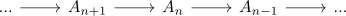
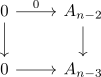
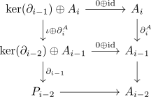

homology as universal delta functor
Proposition
Let $\mathcal{A}$ be an abelian category admitting enough projectives , $\mathrm{Ch_*}(\mathcal{A})$ the category of chain complexes and $H_n(-)$ the homology functor Then for $n_0 \in \mathbb{Z}$ and the homology functor
Proof
delta functor
universal
using coeffacable delta functor as universal delta functor we show that $H_n(-)$ is coeffacable Consider a chain complex

Then we inductively construct an acyclic chain complex $P_*$ and an epimorphism $P_* \rightarrow A_*$:
start
for $n - 2$ choose

step
Suppose there exists $P_{j}$ for $j < i$. Then consider

This is a chain complex, as both $A_i \rightarrow A_{i-1} \rightarrow A_{i-2}$ and $\mathrm{ker}(\partial_{i-1}) \rightarrow (\mathrm{ker}(\partial_{i-2} \oplus A_{i-1}) \rightarrow P_{i-2}$ evaluate as zero morphism.
Furthermore, the map is a chain map, since
At last $P_*$ is exact, as by definition
is an epimorphism onto the kernel